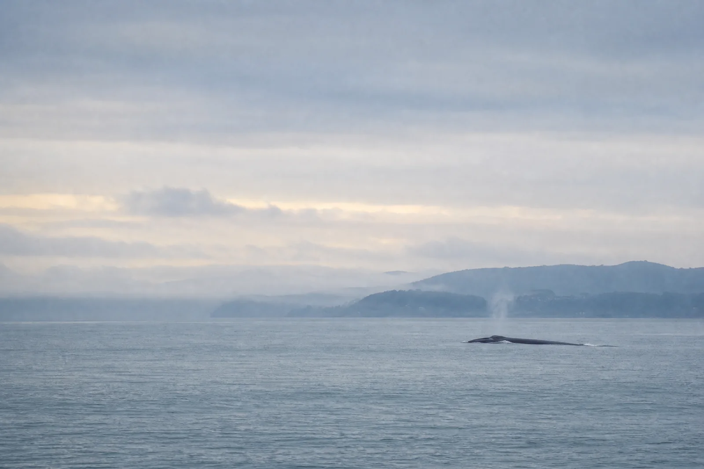

Blog Campeche Lofts
Florianópolis para viver com mais contexto.
Guias práticos sobre o Campeche, o sul da ilha, natureza, cultura e formas mais tranquilas de planejar uma temporada em Florianópolis.
Leituras recentes
Boas informações para uma viagem bem pensada.
Cada artigo parte de uma dúvida real e privilegia fontes atualizadas. Quando o assunto muda com o tempo, a data de revisão e os links de referência ficam visíveis no próprio texto.

Natureza responsável
Temporada de baleias-franca no litoral de Santa Catarina: como acompanhar com respeito
Entenda o período indicado para a espécie, onde acompanhar informações atualizadas e por que observar com responsabilidade importa.

Estadias mais longas
Trabalho remoto em Florianópolis: como planejar uma temporada com mais leveza
Um roteiro prático para organizar espaço, rotina, deslocamentos e o que vale confirmar antes de escolher uma hospedagem temporária.
Um compromisso com informação útil. O blog não publica preços, disponibilidade ou agenda sem confirmação. Para temas que mudam com o tempo, priorizamos fontes institucionais e deixamos o caminho de consulta disponível.